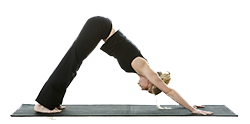
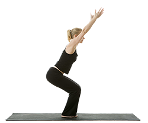
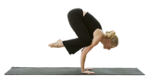

Most of us are accustomed to looking outside of ourselves for fulfillment. We are living in a world that conditions us to believe that outer attainments can give us what we want. Yet again and again our experiences show us that nothing external can completely fulfill the deep longing within for "something more." Most of the time, however, we find ourselves striving toward that which always seems to lie just beyond our reach. We are caught up in doing rather than being, in action rather than awareness. It is hard for us to picture a state of complete calmness and repose in which thoughts and feelings cease to dance in perpetual motion. Yet it is through such a state of quietude that we can touch a level of joy and understanding impossible to achieve otherwise.
What is Yoga?
The origin of yoga is located in India, in the Indus Valley. Its age, however, it is difficult to determine, but it is speculated that could have between three and five thousand years. Yoga is a simple process of reversing the ordinary outward flow of energy and consciousness so that the mind becomes a dynamic center of direct perception no longer dependent upon the fallible senses but capable of actually experiencing Truth.
The word yoga itself means "union": of the individual consciousness or soul with the Universal Consciousness or Spirit. Though many people think of yoga only as physical exercises — the asanas or postures that have gained widespread popularity in recent decades — these are actually only the most superficial aspect of this profound science of unfolding the infinite potentials of the human mind and soul.
The type most widely practiced today and yoga is hatha yoga, comprising a sequence of postures and breathing exercises that strengthen the body and foster relaxation states. Also, yoga is considered of great importance the practice of pranayama, a set of exercises to get control breathing, which is the vital energy, and achieve peace of mind.
Among its many benefits, yoga helps the individual to have a more harmonious relationship with your body, mind and control your emotions and release stress, all of which contribute to reaching a state of well-being.
Benefits of Yoga
Flexibility
Emotional tensions become bodily tensions. That puts impediment to the smooth flow of energy and blood so toxins accumulate in our muscles and bones, especially in the joints. Yoga uses certain types of conscious breathing, in specific positions, to dissolve these accumulations and streamline our structure. It is very pleasant stretch. Nice to have a flexible body. Intuitively we know we need.
Circulation
The blood circulatory system is composed of veins and arteries along which the most essential components to our health; both those who feed us as they will have to be removed to clean the body. If excess toxins, pipes are saturated, the blood is weakened and that surplus remains circulating in the body, affecting the functioning of the body in general. Within technology yoga, there are a number of positions in movement, especially the strongest, inverted and involving the legs, which are designed to unclog and recycle this system. Improve circulation brings new life to the cells and very directly affects our health.
Spine
Yogi Bhajan says that youth is in the flexibility of the spine. Is the structural base of the body, central canal of the nervous system, following the back muscles, via irrigation brain, head support and more ... All yoga exercises promote health of the spine and therefore of whole body and it has connected to it through the nervous system. You will enjoy different asanas, both static and dynamic designed specifically to recover range of motion.
Glands
The glands are the major regulators of all systems that interact in our body. also determine, in large part, our moods and psychological (anxiety, sadness, moodiness, hypersensitivity, hyperactivity, etc.). Technology kundalini yoga is primarily oriented, with very precise exercises, balance the glands, the "guardian of health."
Organs
Both Hatha Yoga and Kundalini Yoga, yoga we call organs, treated in depth the health of our bodies. The constant and deep massage conducive torso movements; twisting and circular movements with deep breathing or diaphragmatic, go detensioning and irrigating liver, pancreas, kidneys .... The precise structure and healthy asanas we add the breath of fire or long deep breathing, which pumped more blood and clean energy.
Nervous System
The nervous system gives us the image of our life. He is the recipient of the information circular ago. Typically, this system is overloaded and we know reset, which increases stress. Who knows relax in our days ... The most notorious of Yoga is that makes us calm and peaceful beings. That is the popular idea of a yoga practitioner. And it corresponds to reality. As this is a system whose network covers the whole body receives the benefit of all tools used elYoga; mantras, breathing, asanas and meditation help relax and tone the nervous system, calming and strengthening it at once.
Some Yoga Poses
| Yoga Pose | Description | Benefits |
|---|---|---|
| Downward Dog  |
The Downward Dog yoga pose lengthens and decompresses the spine, stretches the hamstrings, strengthens your arms, flushes your brain with fresh oxygen and calms your mind. |
|
| Utkatasana  |
The Chair yoga position tones your leg muscles, strengthens your hip reflexors, ankles, calves and back. It stretches the chest and shoulders. It reduces symptoms of flat feet and it stimulates your heart, diaphragm, and abdominal organs. |
|
| Bakasana  |
The Crow yoga pose strengthens the wrists, forearms and abdomen while also stretching the hamstring. Balance is crucial for this pose. |
|